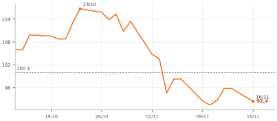

Petrolio
Il petrolio cade: il mercato guarda all'eccesso di offerta
Segnali di recupero dei flussi da Hormuz rafforzano l'idea di un eccesso di offerta. L'Agenzia internazionale dell'energia ora prevede per il quarto trimestre 1,7 milioni di barili al giorno di offerta in più della domanda (Reuters).

Meno petrolio vuol dire meno inflazione, di solito con un po' di ritardo: i carburanti costano meno subito, i prezzi di trasporti e beni ci mettono più tempo. Per la Fed che deve decidere a dicembre un Brent più basso è un sollievo, anche se da solo non basta.
Intanto cambia anche la domanda: la lavorazione di greggio nelle raffinerie cinesi scende dell'8,1% su un anno e implica scorte in aumento di circa 492 mila barili al giorno. Goldman Sachs vede il Brent a 88 dollari in media il prossimo anno, ma avverte che gli attacchi alle navi tengono aperto il rischio di rialzo nel breve.
E quindi
Il minimo recente è 91,49 $ del 10/11: da lì il Brent è rimbalzato a 95,82 $ in due giorni, e ieri ci è tornato vicino.
Da guardare
Un nuovo attacco che blocchi davvero i flussi smentirebbe la tesi; più petroliere che passano da Hormuz la rafforzano.
Fonti: Reuters, Radiocor; chiusure del Brent future (FMP).
Leggila impaginata nel giornale, pag. 4 ›